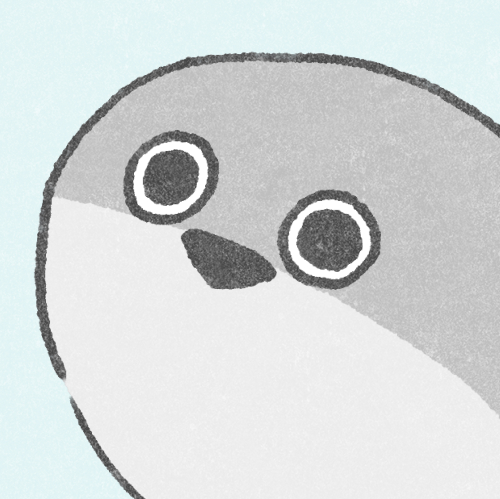

ワープスクロールへ移動
HELLO
こんにちは
大学生です。
welcome to my life
好きなもの
ゆとりのある人生 ゆっくり動画 清水寺
嫌いなもの
昆虫類 戦争
ダンゴムシ
戦争について知らない方はこちらから➡ 戦争
いい世の中になってほしい ※↓こんな感じ※

スクロールリンク
トップに戻る
人生相談
あなたは今幸せですか？・・・
はい
いいえ
どちらとも言いづらい
元気になるためにすること
私が落ち込んだ時に元気になる方法を教えます
お金をかけないで自分の好きなことをする！
例えばこういうことをします。
- 音楽を聴く
- 嫌なことを思い出しながらシャドウボクシング
- ランニング
- YouTubeをツッコミながら見る
可能な限り教えられる情報？
| 年齢 |
性別 |
体重 |
納豆 |
| ??歳 |
男 |
55kgだと思う |
嫌い |
最後に自分の好きなゆっくり動画と清水寺の場所を掲載します。